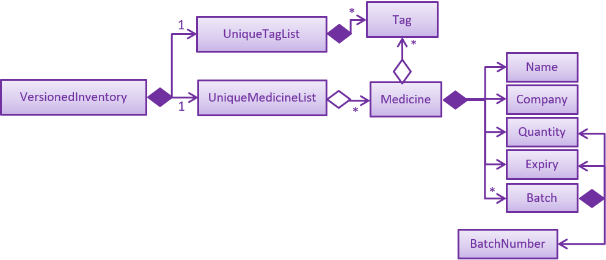

By: Team T12-3 Since: Feb 2019 Licence: MIT
1. Introduction
Welcome to the MediTabs Developer Guide. You can find step by step instructions on how to set up MediTabs project on your computer and modify the project to suit your needs. You can also find out more about the development process of MediTabs such as its design and implementation. Interested? You can jump to [Setting Up] to get started. Enjoy!
1.1. What is MediTabs
MediTabs is a desktop application, developed using Java, for managing medicine stock taking. You can use MediTabs in your clinics to easily keep track of your medicine inventory and take note of important information such as which medicines are low in stock, expiring soon or have expired.
MediTabs supports Windows, Linux and MacOS operating systems.
1.2. Who is this guide for?
Are you a developer who wants to learn how MediTabs is designed and implemented, contribute to the development of MediTabs or modify MediTabs for your needs? If so, this guide provides information that will not only help you better understand the inner workings of MediTabs but also the various classes provided which you can use when modifying MediTabs.
2. Setting up
Follow the step by step instructions below to set up MediTabs project with IntelliJ Integrated Development Environment (IDE).
| You are free to use any IDE which you are comfortable with but we highly recommend using IntelliJ. As we use IntelliJ in the development of MediTabs, the instructions to set up MediTabs will be catered for users of IntelliJ. You can download IntelliJ here. If you are planning to use IntelliJ, both the community (free) and ultimate (paid) editions of IntelliJ can be used to set up MediTabs project. |
2.1. Prerequisites
-
JDK
9(highly recommended) or10JDK 11and later are not recommended due to some features being removed which were once available in JDK9. You can read more about the issue highlighted from the developers of the base source code which MediTabs is based on and improved upon hereJDK 10on Windows will fail to run tests in headless mode due to a JavaFX bug. Windows developers are highly recommended to use JDK9. -
IntelliJ IDE
IntelliJ by default has Gradle and JavaFx plugins installed.
Do not disable them. If you have disabled them, go toFile>Settings>Pluginsto re-enable them.
2.2. Setting up the project on your computer
-
Fork this repository, and clone the fork to your computer
-
Open IntelliJ (if you are not in the welcome screen, click
File>Close Projectto close the existing project dialog first) -
Set up the correct JDK version for Gradle
-
Click
Configure>Project Defaults>Project Structure -
Click
New…and find the directory of the JDK
-
-
Click
Import Project -
Locate the
build.gradlefile and select it. ClickOK -
Click
Open as Project -
Click
OKto accept the default settings -
Open a console and run the command
gradlew processResources(Mac/Linux:./gradlew processResources). It should finish with theBUILD SUCCESSFULmessage.
This will generate all the resources required by the application and tests. -
Open
MainWindow.javaand check for any code errors-
Due to an ongoing issue with some of the newer versions of IntelliJ, code errors may be detected even if the project can be built and run successfully
-
To resolve this, place your cursor over any of the code section highlighted in red. Press ALT+ENTER, and select
Add '--add-modules=…' to module compiler optionsfor each error
-
-
Repeat this for the test folder as well (e.g. check
HelpWindowTest.javafor code errors, and if so, resolve it the same way)
2.3. Verifying the setup
-
Run the
seedu.address.MainAppand try a few commands -
Run the tests to ensure they all pass.
2.4. Configurations to do before writing code
2.4.1. Configuring the coding style
This project follows oss-generic coding standards. IntelliJ’s default style is mostly compliant with ours but it uses a different import order from ours. To rectify,
-
Go to
File>Settings…(Windows/Linux), orIntelliJ IDEA>Preferences…(macOS) -
Select
Editor>Code Style>Java -
Click on the
Importstab to set the order-
For
Class count to use import with '*'andNames count to use static import with '*': Set to999to prevent IntelliJ from contracting the import statements -
For
Import Layout: The order isimport static all other imports,import java.*,import javax.*,import org.*,import com.*,import all other imports. Add a<blank line>between eachimport
-
Optionally, you can follow the UsingCheckstyle.adoc document to configure Intellij to check style-compliance as you write code.
2.4.2. Updating documentation to match your fork
After forking the repo, the documentation will still have the CS2103-AY1819S2-T12-3 branding and refer to the CS2103-AY1819S2-T12-3/main repo.
If you plan to develop this fork as a separate product (i.e. instead of contributing to CS2103-AY1819S2-T12-3/main), you should do the following:
-
Configure the site-wide documentation settings in
build.gradle, such as thesite-name, to suit your own project. -
Replace the URL in the attribute
repoURLinDeveloperGuide.adocandUserGuide.adocwith the URL of your fork.
2.4.3. Setting up CI
Set up Travis to perform Continuous Integration (CI) for your fork. See UsingTravis.adoc to learn how to set it up.
After setting up Travis, you can optionally set up coverage reporting for your team fork (see UsingCoveralls.adoc).
| Coverage reporting could be useful for a team repository that hosts the final version but it is not that useful for your personal fork. |
Optionally, you can set up AppVeyor as a second CI (see UsingAppVeyor.adoc).
| Having both Travis and AppVeyor ensures your App works on both Unix-based platforms and Windows-based platforms (Travis is Unix-based and AppVeyor is Windows-based) |
2.4.4. Getting started with coding
When you are ready to start coding,
-
Get some sense of the overall design by reading Section 3.1, “Architecture”.
3. Design
3.1. Architecture

The Architecture Diagram given above explains the high-level design of the App. Given below is a quick overview of each component.
The .pptx files used to create diagrams in this document can be found in the diagrams folder. To update a diagram, modify the diagram in the pptx file, select the objects of the diagram, and choose Save as picture.
|
Main has only one class called MainApp. It is responsible for,
-
At app launch: Initializes the components in the correct sequence, and connects them up with each other.
-
At shut down: Shuts down the components and invokes cleanup method where necessary.
Commons represents a collection of classes used by multiple other components.
The following class plays an important role at the architecture level:
-
LogsCenter: Used by many classes to write log messages to the App’s log file.
The rest of the App consists of four components.
Each of the four components
-
Defines its API in an
interfacewith the same name as the Component. -
Exposes its functionality using a
{Component Name}Managerclass.
For example, the Logic component (see the class diagram given below) defines it’s API in the Logic.java interface and exposes its functionality using the LogicManager.java class.
How the architecture components interact with each other
The Sequence Diagram below shows how the components interact with each other for the scenario where the user issues the command delete 1.

delete 1 commandThe sections below give more details of each component.
3.2. UI component
API : Ui.java
The UI consists of a MainWindow that is made up of parts e.g.CommandBox, ResultDisplay, MedicineListPanel, StatusBarFooter, InformationPanel etc. All these, including the MainWindow, inherit from the abstract UiPart class.
The UI component uses JavaFX UI framework. The layout of these UI parts are defined in matching .fxml files that are in the src/main/resources/view folder. For example, the layout of the MainWindow is specified in MainWindow.fxml
The UI component,
-
Executes user commands using the
Logiccomponent. -
Listens for changes to
Modeldata so that the UI can be updated with the modified data.
3.3. Logic component
API :
Logic.java
-
Logicuses theInventoryParserclass to parse the user command. -
This results in a
Commandobject which is executed by theLogicManager. -
The command execution can affect the
Model(e.g. adding a Medicine). -
The result of the command execution is encapsulated as a
CommandResultobject which is passed back to theUi. -
In addition, the
CommandResultobject can also instruct theUito perform certain actions, such as displaying help to the user.
3.4. Model component
API : Model.java
The Model,
-
stores a
UserPrefobject that represents the user’s preferences. -
stores the Inventory data.
-
exposes an unmodifiable
ObservableList<Medicine>that can be 'observed' e.g. the UI can be bound to this list so that the UI automatically updates when the data in the list change. -
does not depend on any of the other three components.
Given below an object diagram to better illustrate how a medicine is stored in the Model component.

Medicine class.
As a more OOP model, we can store a Tag list in Inventory, which Medicine can reference. This would allow Inventory to only require one Tag object per unique Tag, instead of each Medicine needing their own Tag object. An example of how such a model may look like is given below. |
+ 
3.5. Storage component
API : Storage.java
The Storage component,
-
can save
UserPrefobjects in json format and read it back. -
can save the medicine inventory data in json format and read it back.
3.6. Common classes
Classes used by multiple components are in the seedu.address.commons package.
4. Implementation
This section provides you with some description of how certain key features of our product are being implemented.
4.1. Information Panel
4.1.1. Current Implementation
The information panel is mainly driven by InformationPanel which extends UiPart with an added mechanism to interact with the currently selected medicine.
It implements the following operations:
-
InformationPanel#showSelectedInformation(Medicine medicine)— Creates and displays aBatchTablethat contains information of the selected medicine and its batches. -
InformationPanel#emptyInformationPanel()— Deletes theBatchTablebeing displayed (if any) to show an empty pane.
These operations are hidden and are only triggered when the value of the selected medicine changes.
The InformationPanel is initialized with the selected medicine as an ObservableValue, and a ChangeListener is added to it.
ChangeListener#changed(ObservableValue<? extends T> observable, T oldValue, T newValue) is called whenever the value of the selected medicine changes.
Given below is a diagram showing the execution of InformationPanel when a change occurs:
Given below is an example usage scenario and how the information panel behaves at each step.
Step 1. The user launches the application for the first time. An empty InformationPanel is displayed.
Step 2. The user executes select 1 command to select the 1st medicine in the inventory. Since the new value is not null, InformationPanel#showSelectedInformation(Medicine medicine) is called.
An update command will also cause ChangeListener#changed(ObservableValue<? extends T> observable, T oldValue, T newValue) to be called as although the same medicine is still selected, the medicine is replaced in the Inventory with updated fields.
|
Step 3. The user executes find n/Paracetamol …. The find command deselects the selected medicine and the new value is null. Only InformationPanel#emptyInformationPanel() is called.
4.1.2. Design Considerations
Aspect: How the batch table executes
-
Alternative 1 (current choice): Creates a new
BatchTableevery time a new medicine is selected.-
Pros: Information can be taken from
Modelcomponent during initialization so no extra memory is needed to store table information. -
Cons: May have performance issues in terms of time needed to retrieve the information and build the table, especially if number of batches becomes huge.
-
-
Alternative 2: Save created
BatchTablesas a field inMedicine.-
Pros: Save time needed for creating the
BatchTablefor faster response time. -
Cons: More memory needed to store
BatchTable.
-
4.2. Exporting as CSV file format
This section provides you with an overview of how exporting as Comma-separated values (CSV) file format is implemented in MediTabs and the design considerations made by our team with regards to its implementation.
4.2.1. Current Implementation
The exporting as CSV file format mechanism is facilitated by CsvWrapper.
It is build on top of the Opencsv Java CSV parser library, licensed under the Apache 2 OSS License, so that it integrates with our product. This is done by providing additional operations to support exporting the current medicine inventory data shown in the GUI to CSV file format.
There are many additonal operations added in CsvWrapper but we will only list the key operations which are the main drivers of the overall implementation of the feature for easier reference and understanding.
The key operations are as follows:
-
CsvWrapper#export()— Export the current medicine inventory data shown in the GUI to CSV file format. -
CsvWrapper#createCsvFile(String csvFileName)— Creates a CSV file with the file name based on thecsvFileNameinput. The file is created in the defaultexporteddirectory which is located in the same directory as our product application.If the default exporteddirectory is not found, it will be automatically created. -
CsvWrapper#writeDataToCsv(List currentGuiList)— Writes the current medicine inventory data shown in the GUI to the CSV file created by theCsvWrapper#createCsvFile(String csvFileName)operation.
Out of the three key operations stated above, only CsvWrapper#export() is a public operation available for use by other components. It acts as the main interface which other components use to interact with CsvWrapper in order to integrate exporting to CSV file format feature into their own implementation.
|
Given below is a sequence diagram overview of how these 3 key operations behaves when the user executes the export command in order to export the current medicine inventory data shown in the GUI to CSV file format:
Given below is a brief description of how the exporting as CSV file format mechanism behaves as shown in the sequence diagram above:
Step 1: When the user executes the export command, assuming parsing of the command line arguments have already been completed, the ExportCommand#execute() operation is called.
Step 2: The ExportCommand#execute() operation initialises the CsvWrapper with the file name of the CSV file to be stored and the current model instance as its input parameters.
Step 3: The ExportCommand#execute() operation then calls CsvWrapper#export() operation which is the first key operation which implements the export to CSV file format feature.
Step 4: The CsvWrapper#export() operation retrieves the current medicine inventory data shown in the GUI by calling the Model#getFilteredMedicineList() operation.
Step 5: After retrieving the data, the CsvWrapper#createCsvFile(String csvFileName) operation, which is the second key operation, is called. It creates an empty CSV file with the input file name in the default exported directory.
If a CSV file with the input file name already exists in the exported directory, a "Could not export data to csv file: {Input File Name} already exists in "exported" directory" exception will be shown in the CommandResult panel of the GUI as a CommandException is thrown and the exporting process will stop executing. In other words, the current medicine inventory data shown in the GUI would not be exported.
|
Step 6: After the empty CSV file is created, the CsvWrapper#writeDataToCsv, which is the third key operation, is called to process the current medicine inventory data retrieved earlier in Step 4 and writes to the CSV file in an organised format for easier reference by the users of the exported CSV file.
Step 7: The current medicine inventory data shown in the GUI is exported successfully to CSV file format.
Step 8: The ExportCommand#execute() operations returns a CommandResult which shows the current list is exported to a CSV file with the input file name.
The following activity diagram summarizes what happens when a user executes the export command:
4.2.2. Design Considerations
Aspect: How exporting as CSV file format executes
-
Alternative 1 (current choice): Export the current medicine inventory data shown in the GUI to CSV file format.
-
Pros: Easy to implement and users have a preview of the data before exporting.
-
Cons: May have performance issues in terms of memory usage.
-
-
Alternative 2: Individual commands each adds an additional parameter to export as CSV file.
-
Pros: Users can export directly through a single command (e.g. for
filtercommand when the export option is enabled, export the filtered medicine inventory data immediately without having to retrieve fromModel#getFilteredMedicineList()operation. -
Cons: We must ensure that the implementation and integration of the exporting to CSV file of each individual commands are correct. Furthermore, users are not able preview the data before exporting.
-
Aspect: Data structure/Algorithm/Implementation to support the export command
-
Alternative 1 (current choice): Iterate through each of the Medicine in the list retrieved from
Model#getFilterMedicineList()operation to build the structure in which the data is organised when exported to CSV file format.-
Pros: Easy for developers to understand, especially for those who want to modify the way the data is organised when exported to CSV file format but have no prior knowledge on
OpencsvJava CSV parser library. -
Cons: The time complexity of the algorithm is O(n) and might not be as efficient especially when involving large amounts of data. Furthermore, it does not take full advantage of the more advanced features provided by the
OpencsvJava CSV parser library.
-
-
Alternative 2: Use
OpencsvJava CSV parser library’sStatefulBeanToCsvBuilderoperation for building the structure in which the data is organised from the list retrieved fromModel#getFilterMedicineList()operation when exported to CSV file format.-
Pros: We do not need to iterate through the list and convert it to a String Array as we can just use the library’s
StatefulBeanToCsvBuilderoperation to build the structure from the list by passing the list as a parameter to the operation. Furthermore, the formatting process can be automated using the operation. It is also more efficient in terms of performance according to the library’s documentation if ordering of the data exported is not a concern to the developer. -
Cons: Requires prior knowledge on the way in which the library’s
StatefulBeanToCsvBuilderoperation works. If the developers want to modify the data exported to be ordered in a specific way, it requires knowledge on the library’sMappingStrategyrelated operations which may be complicated for developers new to the library.More information on Opencsvlibrary’sStatefulBeanToCsvBuilderoperation can be found in the library’s documentation.
-
4.3. Undo/Redo
4.3.1. Current Implementation
The undo/redo mechanism is facilitated by VersionedInventory.
It extends Inventory with an undo/redo history, stored internally as an inventoryStateList and currentStatePointer.
Additionally, it implements the following operations:
-
VersionedInventory#commit()— Saves the current inventory state in its history. -
VersionedInventory#undo()— Restores the previous inventory state from its history. -
VersionedInventory#redo()— Restores a previously undone inventory state from its history.
These operations are exposed in the Model interface as Model#commitInventory(), Model#undoInventory() and Model#redoInventory() respectively.
Given below is an example usage scenario and how the undo/redo mechanism behaves at each step.
Step 1. The user launches the application for the first time. The VersionedInventory will be initialized with the initial inventory state, and the currentStatePointer pointing to that single inventory state.
Step 2. The user executes delete 5 command to delete the 5th medicine in the inventory. The delete command calls Model#commitInventory(), causing the modified state of the inventory after the delete 5 command executes to be saved in the inventoryStateList, and the currentStatePointer is shifted to the newly inserted inventory state.
Step 3. The user executes add n/Paracetamol … to add a new medicine. The add command also calls Model#commitInventory(), causing another modified inventory state to be saved into the inventoryStateList.
If a command fails its execution, it will not call Model#commitInventory(), so the inventory state will not be saved into the inventoryStateList.
|
Step 4. The user now decides that adding the medicine was a mistake, and decides to undo that action by executing the undo command. The undo command will call Model#undoInventory(), which will shift the currentStatePointer once to the left, pointing it to the previous inventory state, and restores the inventory to that state.
If the currentStatePointer is at index 0, pointing to the initial inventory state, then there are no previous inventory states to restore. The undo command uses Model#canUndoInventory() to check if this is the case. If so, it will return an error to the user rather than attempting to perform the undo.
|
The following sequence diagram shows how the undo operation works:
The redo command does the opposite — it calls Model#redoInventory(), which shifts the currentStatePointer once to the right, pointing to the previously undone state, and restores the inventory to that state.
If the currentStatePointer is at index inventoryStateList.size() - 1, pointing to the latest inventory state, then there are no undone inventory states to restore. The redo command uses Model#canRedoInventory() to check if this is the case. If so, it will return an error to the user rather than attempting to perform the redo.
|
Step 5. The user then decides to execute the command list. Commands that do not modify the inventory, such as list, will usually not call Model#commitInventory(), Model#undoInventory() or Model#redoInventory(). Thus, the inventoryStateList remains unchanged.
Step 6. The user executes clear, which calls Model#commitInventory(). Since the currentStatePointer is not pointing at the end of the inventoryStateList, all inventory states after the currentStatePointer will be purged. We designed it this way because it no longer makes sense to redo the add n/Paracetamol … command. This is the behavior that most modern desktop applications follow.
The following activity diagram summarizes what happens when a user executes a new command:
4.3.2. Design Considerations
Aspect: How undo & redo executes
-
Alternative 1 (current choice): Saves the entire inventory.
-
Pros: Easy to implement.
-
Cons: May have performance issues in terms of memory usage.
-
-
Alternative 2: Individual command knows how to undo/redo by itself.
-
Pros: Will use less memory (e.g. for
delete, just save the medicine being deleted). -
Cons: We must ensure that the implementation of each individual command are correct.
-
Aspect: Data structure to support the undo/redo commands
-
Alternative 1 (current choice): Use a list to store the history of inventory states.
-
Pros: Easy for new Computer Science student undergraduates to understand, who are likely to be the new incoming developers of our project.
-
Cons: Logic is duplicated twice. For example, when a new command is executed, we must remember to update both
HistoryManagerandVersionedInventory.
-
-
Alternative 2: Use
HistoryManagerfor undo/redo-
Pros: We do not need to maintain a separate list, and just reuse what is already in the codebase.
-
Cons: Requires dealing with commands that have already been undone: We must remember to skip these commands. Violates Single Responsibility Principle and Separation of Concerns as
HistoryManagernow needs to do two different things.
-
4.4. [Proposed] Data Encryption
Data encryption is likely to be implemented in future versions of the MediTabs if a reasonable implementation is found.
4.4.1. Design Considerations
Aspect: How data encryption is executed
-
Alternative 1: Encrypt the entire inventory.
-
Pros: Easy to implement. Use pre-existing encryption libraries to encrypt the entire inventory.
-
Cons: May have performance issues when encrypting/decrypting large amounts of data.
-
-
Alternative 2: Only encrypt parts of the inventory user selects.
-
Pros: More efficient in terms of performance (cuts down on encryption/decryption time).
-
Cons: Add
encryptanddecryptcommand to allow user to choose what needs to be encrypted and decrypted respectively. Need to encrypt/decrypt different chunks of data correctly.
-
Aspect: Data structure to support data encryption
-
Alternative 1: Save the entire inventory as encrypted data in the database.
-
Pros: Data is secure and not viewable without encryption key.
-
Cons: Implement log in page for decryption of inventory. Require alternative if encryption key is forgotten.
-
-
Alternative 2: Save encrypted parts of inventory and plaintext in database.
-
Pros: Able to salvage some information if encryption key is lost.
-
Cons: Need to implement packing/unpacking of encrypted data and plaintext during startup/shutdown.
-
4.5. Exporting Medicine Label
The exporting of a medicine label to a PDF formatted file is implemented by using Apache PDFBox.
Current implementation: Under the build.gradle file, we have added new dependency implementation group: 'org.apache.pdfbox', name: 'pdfbox', version: '2.0.13'. This imports the library over to the project for use.
There are many operations available added in the Apache PDFBox, the key operations that we are using would only be:
PDDocument() - For creating a new blank PDF file for the medicine details to be exported to.
PDPage() - Creates a new PDPage instance for embedding.
PDPageContentStream(PDDocument , PDPage) - Provides the ability to write a page content stream.

Given below is an example usage scenario and how the label command behaves in each step:
Step 1. The user launches the application for the first time. An empty InformationPanel is displayed.
Step 2. The user executes the label 2 to output the label of the 2nd medicine indexed in the inventory. Since no file name is included in the argument, the default filename 'to_print' is used instead. Then, LabelCommand#execute() is called.
Step 3. The user can find the file to_print under the main folder.
Step 4. The user executes label 1 f/file_to_print to output the label of the 1st medicine indexed in the inventory. The LabelCommandParser class will be able to tokenize and read the desired file name. Then, LabelCommand#execute() is called.
Step 5. The user can find a new file file_to_print under the same main folder.
If the user would execute another label 1, the original to_print file will be replaced with the information of the 1st medicine indexed in the inventory. Users are warned in the User Guide to be caution about overwriting files.
|
4.5.1. Design Consideration
Aspect: How label executes
-
Alternative 1 (current choice): Creates a new
PDFDocumentevery time a medicine it to be labeled.-
Pros: Easy to implement.
-
Cons: Uses more of the user computer memory space as it creates the temporary file.
-
-
Alternative 2: Find the existing PDF file and edit.
-
Pros: Will use less memory.
-
Cons: We have to read the existing file which requires more time to execute.
-
4.6. Warning Panel
4.6.1. Current Implementation
The warning panel is driven by the MainWindow which creates WarningPanel that extends UiPart. The WarningPanel then creates two WarningListView where the list of expiring medicine and list of medicine low in stock will reside. The lists updates themselves when there are any changes made to the inventory. Each item of a list is represented by a WarningCard.
The following are implemented:
-
WarningPanel#setUpVBox(ObservableList<Medicine>, ObservableList<Medicine>)— Sets up theVBox(vertical box) where the lists will be displayed in, and creates twoWarningListViewobjects. EachObservableListis passed into aWarningListView, along with aStringdescriptor of the list, as such:WarningListView(ObservableList<Medicine>, String "expiry") -
WarningListViewextendsUiPart— Upon construction,ListView#setItems(ObservableList<T> value)andListView#setCellFactory(Callback<ListView<T>, ListCell<T>> value)are called.-
ListView#setItems(ObserverableList<Medicine> medicineList)— Sets theObservableListwhose items will be displayed in theListView. Due toObservableListsemantics, theListViewautomatically updates when there are changes made to the inventory. -
ListView#setCellFactory(Callback<ListView<Medicine>, ListCell<Medicine>> listView → new WarningListViewCell())— Sets the cell factory for theListViewwithin the classWarningListView.-
WarningListViewCellextendsListCell<T>— It overridesListCell#updateItem(T item, boolean empty)allowing customization by creating aWarningCardfor each cell.
-
-
-
WarningCardextendsUiPart— Sets the fields (eg. name of medicine, quantity, expiry date) to be displayed in the warning list view cell.
The following sequence diagram shows how WarningPanel is executed when MediTab is initialized:
Explanation of the sequence diagram above:
Step 1. When the user launches the application for the first time, MainWindow is called during the setting up of the GUI. Within the MainWindow. A WarningPanel, with the two ObservableList to be displayed as parameters, is then created.
Step 2. WarningPanel#setUpVBox is called to create two WarningListView so that the ObservableList can be displayed. Each list will be passed into one WarningListView as a parameter, along with a String descriptor of that list. For simplicity, the construction of only one WarningListView is shown.
Step 3. Within the WarningListView’s constructor, `ListView#setItems and ListView#setCellFactory are called to set up this ListView<Medicine>.
Any command that modifies the inventory will result in a change in the ObservableList being set using ListView#setItems. This ensures that the ListView is kept up to date with the most recent version of the inventory.
|
Step 4. The cell factory creates cells by creating a WarningListViewCell. This creates a WarningCard for every item in the ListView supplied. These cells are displayed in the GUI.
4.6.2. Design Considerations
Aspect: Construction of the lists displayed by the warning panel
Two ObservableLists are required, one to display names of medicine expiring soon and the other to display medicine low in stock.
-
Alternative 1 (current choice): Create two
ObservableListin theModelby filtering the main medicine list from the versioned inventory.-
Pros: Easy to change predicate for filtration when needed, making it possible to have user defined thresholds for filtration.
-
Cons: Need to create a new filtered
ObservableListevery time the predicate used for filtering changes. This would be the case when the user sets his/her own threshold.
-
-
Alternative 2: Pass the medicine list into the
Uifor filtration.-
Pros: Simple to implement and filter with the default predicates (i.e. thresholds for expiration and low stock) to obtain the two lists.
-
Cons: No separation of concerns. Not possible to set user defined thresholds for either list.
-
4.7. Logging
We are using java.util.logging package for logging. The LogsCenter class is used to manage the logging levels and logging destinations.
-
The logging level can be controlled using the
logLevelsetting in the configuration file (See Section 4.9, “Configuration”) -
The
Loggerfor a class can be obtained usingLogsCenter.getLogger(Class)which will log messages according to the specified logging level -
Currently log messages are output through:
Consoleand to a.logfile.
Logging Levels
-
SEVERE: Critical problem detected which may possibly cause the termination of the application -
WARNING: Can continue, but with caution -
INFO: Information showing the noteworthy actions by the App -
FINE: Details that is not usually noteworthy but may be useful in debugging e.g. print the actual list instead of just its size
4.8. Validation of File Name
We are using the seedu.address.commons.FileName class which is created by our team for the validation of file name specified by the user. This is important for commands in MediTabs which supports the file name field.
File name does not include file extension such as .csv and .pdf.
|
A list of reasons why we choose to create a FileName class for the validation of file name:
-
There are currently no third party libraries available for validating file name to ensure that the file name is platform independent. In other words, there are no public methods to validate the file name specified by the user to ensure that it is supported on Windows, Linux and MacOS operating systems.
There are certain naming conventions which have to be followed on Windows operating system which are not necessary on Linux and MacOS operating systems. You can read more about the naming conventions for Windows here. You can also refer to this Wikipedia article for a detailed comparison between different naming conventions for different operating systems. -
Ensure consistency by creating a file naming convention.
-
Ensure that files created with file names specified by the user can be used on Windows, Linux and MacOS operating systems. This is to avoid potential bugs involving file names as MediTabs supports Windows, Linux and MacOS operating systems hence, the user might switch between these operating systems when using MediTabs.
4.8.1. Current Implementation
The validation of file name mechanism is facilitated mainly by the FileName#isValidFileName(String fileNameToCheck) operation. The operation checks if the fileNameToCheck input is a valid file name based on the file naming convention we have created for MediTabs.
The file naming convention used in MediTabs is as follows:
Format: Start with an alphabet or number followed by alphabets, numbers, underscore or hyphen
| In order to ensure that the validation of file name is platform independent, the validation is implemented such that it ensures that the specified file name not only follows the file naming convention used in MediTabs but also does not violate file naming conventions in any platform especially Windows which has a very strict file name conventions. |
Based on manual testing by our team on Windows, it is discovered that COM0 and LPT0 are also part of the reserved names which are not allowed as file names in Windows. However, they are not reflected in the Windows documentation under the naming conventions section. In order to ensure that FileName class validation implementation is platform independent, we have included COM0 and LPT0 as reserved names when validating the specified file name.
|
A full list of reserved names implemented in FileName class which are not allowed as file names is as follows:
-
CON, PRN, AUX, NUL, COM0, COM1, COM2, COM3, COM4, COM5, COM6, COM7, COM8, COM9, LPT0, LPT1, LPT2, LPT3, LPT4, LPT5, LPT6, LPT7, LPT8, and LPT9
The specified file name must not be an empty string or null. If the specified file name is an empty string, the specified file name will be declared as invalid. If the specified file name is null, a NullPointerException will be thrown.
|
4.8.2. How to integrate it into new commands in MediTabs?
If you are a developer looking to add new features to MediTabs which involves the creation of files, we recommend integrating the existing FileName class. This can easily be done by making use of FileName#isValidFileName(String fileNameToCheck) operation.
You may wish to refer to the code snippet shown below, which is a modified version of the ParserUtil#parseFileName(String fileName, boolean isEmptyFileNameAllowed) operation used in MediTabs. The code snippet demonstrates how FileName#isValidFileName(String fileNameToCheck) operation can be used for easier reference.
public static FileName parseFileName(String fileName) throws ParseException {
if (!FileName.isValidFileName(fileName)) { (1)
throw new ParseException(FileName.MESSAGE_CONSTRAINTS); (2)
}
return new FileName(fileName); (3)
}| 1 | Validate the specified file name using the FileName#isValidFileName(String fileNameToCheck) operation. |
| 2 | If the specified file name is invalid, a ParseException is thrown. |
| 3 | If the specified file name is valid, a FileName object constructed from the specified file name is returned. |
In the code snippet above, we have modified the method signature from ParserUtil#parseFileName(String fileName, boolean isEmptyFileNameAllowed) to ParserUtil#parseFileName(String fileName) and also its implementation for easier reference and understanding.
|
We highly recommend complementing the FileName class with Java build in classes such as java.io.File or java.nio.file.Files and handling the exceptions thrown by the methods used in those classes when creating files with the validated file names. This is to allow potential exceptions involving but not limited to permissions, security and file name being too long which are outside the scope of FileName class to be handled.
|
Examples of commands in MediTabs which uses the FileName class to validate the specified file name:
-
export [FILE_NAME] -
label INDEX [f/FILE_NAME]
4.9. Configuration
Certain properties of the application can be controlled (e.g user prefs file location, logging level) through the configuration file (default: config.json).
5. Documentation
We use asciidoc for writing documentation.
| We chose asciidoc over Markdown because asciidoc, although a bit more complex than Markdown, provides more flexibility in formatting. |
5.1. Editing Documentation
See UsingGradle.adoc to learn how to render .adoc files locally to preview the end result of your edits.
Alternatively, you can download the AsciiDoc plugin for IntelliJ, which allows you to preview the changes you have made to your .adoc files in real-time.
5.2. Publishing Documentation
See UsingTravis.adoc to learn how to deploy GitHub Pages using Travis.
5.3. Converting Documentation to PDF format
We use Google Chrome for converting documentation to PDF format, as Chrome’s PDF engine preserves hyperlinks used in webpages.
Here are the steps to convert the project documentation files to PDF format.
-
Follow the instructions in UsingGradle.adoc to convert the AsciiDoc files in the
docs/directory to HTML format. -
Go to your generated HTML files in the
build/docsfolder, right click on them and selectOpen with→Google Chrome. -
Within Chrome, click on the
Printoption in Chrome’s menu. -
Set the destination to
Save as PDF, then clickSaveto save a copy of the file in PDF format. For best results, use the settings indicated in the screenshot below.

5.4. Site-wide Documentation Settings
The build.gradle file specifies some project-specific asciidoc attributes which affects how all documentation files within this project are rendered.
Attributes left unset in the build.gradle file will use their default value, if any.
|
| Attribute name | Description | Default value |
|---|---|---|
|
The name of the website. If set, the name will be displayed near the top of the page. |
not set |
|
URL to the site’s repository on GitHub. Setting this will add a "View on GitHub" link in the navigation bar. |
not set |
|
Define this attribute if the project is an official SE-EDU project. This will render the SE-EDU navigation bar at the top of the page, and add some SE-EDU-specific navigation items. |
not set |
5.5. Per-file Documentation Settings
Each .adoc file may also specify some file-specific asciidoc attributes which affects how the file is rendered.
Asciidoctor’s built-in attributes may be specified and used as well.
Attributes left unset in .adoc files will use their default value, if any.
|
| Attribute name | Description | Default value |
|---|---|---|
|
Site section that the document belongs to.
This will cause the associated item in the navigation bar to be highlighted.
One of: * Official SE-EDU projects only |
not set |
|
Set this attribute to remove the site navigation bar. |
not set |
5.6. Site Template
The files in docs/stylesheets are the CSS stylesheets of the site.
You can modify them to change some properties of the site’s design.
The files in docs/templates controls the rendering of .adoc files into HTML5.
These template files are written in a mixture of Ruby and Slim.
|
Modifying the template files in |
6. Testing
6.1. Running Tests
There are three ways to run tests.
| The most reliable way to run tests is the 3rd one. The first two methods might fail some GUI tests due to platform/resolution-specific idiosyncrasies. |
Method 1: Using IntelliJ JUnit test runner
-
To run all tests, right-click on the
src/test/javafolder and chooseRun 'All Tests' -
To run a subset of tests, you can right-click on a test package, test class, or a test and choose
Run 'ABC'
Method 2: Using Gradle
-
Open a console and run the command
gradlew clean allTests(Mac/Linux:./gradlew clean allTests)
| See UsingGradle.adoc for more info on how to run tests using Gradle. |
Method 3: Using Gradle (headless)
Thanks to the TestFX library we use, our GUI tests can be run in the headless mode. In the headless mode, GUI tests do not show up on the screen. That means the developer can do other things on the Computer while the tests are running.
To run tests in headless mode, open a console and run the command gradlew clean headless allTests (Mac/Linux: ./gradlew clean headless allTests)
6.2. Types of tests
We have two types of tests:
-
GUI Tests - These are tests involving the GUI. They include,
-
System Tests that test the entire App by simulating user actions on the GUI. These are in the
systemtestspackage. -
Unit tests that test the individual components. These are in
seedu.address.uipackage.
-
-
Non-GUI Tests - These are tests not involving the GUI. They include,
-
Unit tests targeting the lowest level methods/classes.
e.g.seedu.address.commons.StringUtilTest -
Integration tests that are checking the integration of multiple code units (those code units are assumed to be working).
e.g.seedu.address.storage.StorageManagerTest -
Hybrids of unit and integration tests. These test are checking multiple code units as well as how the are connected together.
e.g.seedu.address.logic.LogicManagerTest
-
6.3. Troubleshooting Testing
Problem: HelpWindowTest fails with a NullPointerException.
-
Reason: One of its dependencies,
HelpWindow.htmlinsrc/main/resources/docsis missing. -
Solution: Execute Gradle task
processResources.
7. Dev Ops
7.1. Build Automation
See UsingGradle.adoc to learn how to use Gradle for build automation.
7.2. Continuous Integration
We use Travis CI and AppVeyor to perform Continuous Integration on our projects. See UsingTravis.adoc and UsingAppVeyor.adoc for more details.
7.3. Coverage Reporting
We use Coveralls to track the code coverage of our projects. See UsingCoveralls.adoc for more details.
7.4. Documentation Previews
When a pull request has changes to asciidoc files, you can use Netlify to see a preview of how the HTML version of those asciidoc files will look like when the pull request is merged. See UsingNetlify.adoc for more details.
7.5. Making a Release
Here are the steps to create a new release.
-
Update the version number in
MainApp.java. -
Generate a JAR file using Gradle.
-
Tag the repo with the version number. e.g.
v0.1 -
Create a new release using GitHub and upload the JAR file you created.
7.6. Managing Dependencies
A project often depends on third-party libraries. For example, MediTabs depends on the Jackson library for JSON parsing. Managing these dependencies can be automated using Gradle. For example, Gradle can download the dependencies automatically, which is better than these alternatives:
-
Include those libraries in the repo (this bloats the repo size)
-
Require developers to download those libraries manually (this creates extra work for developers)
Appendix A: User Stories
Priorities: High (must have) - * * *, Medium (nice to have) - * *, Low (unlikely to have) - *
| Priority | As a … | I want to … | So that I can… |
|---|---|---|---|
|
pharmacist |
view the inventory easily |
check stock levels |
|
pharmacist |
view the expiry dates of medicine easily |
remove expired medicine |
|
pharmacist |
view batch details easily |
get batch information quickly |
|
pharmacist |
add new and existing medicine to the inventory |
keep my inventory updated |
|
pharmacist |
delete medicine |
remove medicine that have expired or are no longer need |
|
pharmacist |
edit inventory level |
keep my inventory updated |
|
pharmacist |
receive notifications when my inventory is low or there is expiring stock |
will not forget to update the inventory |
|
pharmacist |
find a medicine by name |
locate details of the medicine without having to go through the entire list |
|
pharmacist |
export inventory data |
send the data to relevant personnel |
|
pharmacist |
print labels for the medicine |
label the medicine for the patients' reference |
|
pharmacist |
have an auto-completing search bar |
do not have to type out the medicine’s full name |
|
pharmacist |
view purchase and sales history |
forecast sales and performance |
|
pharmacist |
view manufacturers' contact details |
find out who to contact for more stock quickly |
|
pharmacist |
be redirected to a mailer to email manufacturers |
restock quickly |
|
pharmacist |
be recommended dosage |
recommend dosage based on patient’s profile |
|
pharmacist |
have a task list |
set reminders for myself |
|
pharmacist |
save information on medicine’s usage |
remind myself of its usage |
Appendix B: Use Cases
(For all use cases below, the System is the MediTabs and the Actor is the pharmacist, unless specified otherwise)
Use Case 1: View Complete Inventory
MSS
-
Upon start up, System displays the complete inventory of medicine.
-
Pharmacist navigates the list with arrow keys.
Use case ends.
Extensions
-
1a. Pharmacist used
findfunction, filtered inventory is shown.-
1a1. Pharmacist requests for complete inventory to be listed using
listcommand. -
1a2. System displays complete inventory.
Use case resume at step 2.
-
Use Case 2: Update Batch Details of a Medicine in Inventory
MSS
-
Pharmacist notes the index of the medicine to be updated in the list.
-
Pharmacist request to update details of a batch of medicine using the index and the
updatecommand. -
System displays updated details.
Use case ends.
Extensions
-
1a. Medicine is new and has not been added to the inventory.
-
1a1. Pharmacist uses the
addfunction to add a new entry to list. -
1a2. Pharmacist notes the index of the new medicine listing from the search result.
Use case resume at step 2.
-
-
1b. Pharmacist cannot remember batch number of batch to be updated.
-
1b1. Pharmacist uses
selectcommand to select the medicine to be updated. -
1b2. System displays the batch table with information of all batches of the selected medicine.
-
1b3. Pharmacist refers to the batch table while inputting batch details.
Use case resume at step 2.
-
-
2a. Pharmacist did not enter expiry date and batch does not already exist.
-
2a1. An error message is shown.
-
2a2. System requests expiry date be entered for new batches.
-
2a3. Pharmacist repeats request with the required input.
Use case resume at step 3.
-
Use Case 3: Delete Medicine from Inventory
MSS
-
Pharmacist notes the index of the medicine to be deleted in the list.
-
Pharmacist request to delete a medicine listing using the index and the
deletecommand. -
System displays updated list.
Use case ends.
Extensions
-
1a. Pharmacist cannot find the medicine listing manually from the list.
-
1a1. Pharmacist uses the
findfunction to look for medicine listing. -
1a2. System list the search results.
-
1a3. Pharmacist notes the index of the medicine listing from the search result.
Use case resume at step 2.
-
Appendix C: Non Functional Requirements
-
User Constraints
-
The product caters users with a preference for typing commands over the command line. Only limited GUI interactions are available as the focus is on the command line interface.
-
The product is meant only for single user usage. i.e, any features (e.g. profile switching) should only be limited to a single user. Using such features to support mulitple users is not recommended.
-
-
Data
-
User should have read and write permissions for data stored on the local machine. i.e, expert users can edit the data file without the application.
-
Third party database management systems (e.g. MySQL, Postgres) are not permitted.
-
-
Working Environment
-
The product should work on all mainstream OS.
-
Connection to external APIs is not recommended, although the usage of reliable external APIs is permissible. In such cases, a fallback should be implemented should the connection fail.
-
-
Portability
-
The product should work without the need for additional software.
.jarpackage will be used for the product release.
-
-
Testability
-
Avoid implementing features that are difficult to test manually and automatically. i.e, avoid dependence on remote APIs as their behaviours are beyond our control.
-
Due to the project’s constraints, audio related features were not taken into consideration. Avoid any features using audio indicators.
-
Appendix E: Product Survey
Product Name
Author: …
Pros:
-
…
-
…
Cons:
-
…
-
…
Appendix F: Instructions for Manual Testing
Given below are instructions to test the app manually.
| These instructions only provide a starting point for testers to work on; testers are expected to do more exploratory testing. |
F.1. Launch and Shutdown
-
Initial launch
-
Download the jar file and copy into an empty folder
-
Double-click the jar file
Expected: Shows the GUI with a set of sample contacts. The window size may not be optimum.
-
-
Saving window preferences
-
Resize the window to an optimum size. Move the window to a different location. Close the window.
-
Re-launch the app by double-clicking the jar file.
Expected: The most recent window size and location is retained.
-
{ more test cases … }
F.2. Deleting a medicine
-
Deleting a medicine while all medicines are listed
-
Prerequisites: List all medicines using the
listcommand. Multiple medicines in the list. -
Test case:
delete 1
Expected: First entry is deleted from the list. Details of the deleted entry shown in the status message. Timestamp in the status bar is updated. -
Test case:
delete 0
Expected: No medicine is deleted. Error details shown in the status message. Status bar remains the same. -
Other incorrect delete commands to try:
delete,delete x(where x is larger than the list size) {give more}
Expected: Similar to previous.
-
{ more test cases … }
F.3. Saving data
-
Dealing with missing/corrupted data files
-
{explain how to simulate a missing/corrupted file and the expected behavior}
-
{ more test cases … }